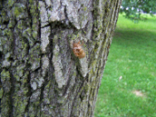
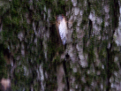
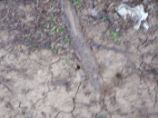
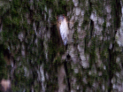
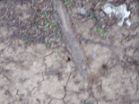

|
| |
Brood X isn't JUST over yet, as a miniscule number will emerge in 2022Written 5/18/2022, last updated N/A "What even is Brood X?"Brood X is a... well, brood of 17-year cicadas that is the largest and occurs in a good amount of the northeastern US. The last 3 emergences were in 2021, 2004, and 1987. They will emerge again in 2038, 2055, 2072, and so on. However, like all things in nature, nothing is perfect; there are off-cycle emergences that can happen 1-4 years early or late. For example, Brood X was seen in large amounts in 2004, yet stragglers appeared in 2000, 2003, 2005, and 2008 (in which this year was also when Brood XIV emerged, in which stragglers of that brood would have popped up in 2004 for the most part). The 4 year early cycles are somewhat common, as with some 1 year cycles. The late 1 year or 4 year cycles, especially the latter, are rare. Keep in mind, these are not 13-year cicadas! They are the same 17-year species that wreaks havoc during the early summer. I live in northern Kentucky, so we got quite a lot back in 2021. I remember riding my bike down some of the parks, and I probably wore myself out by then. They popped up all around me, and I couldn't go a day without them begging for a mate! As much as I hated it after a while, I can't help but notice this phenomenal event that takes place a few times in one's lifetime. However, we're in a world that is CONSTANTLY moving, and they become quite a pain in the ass to deal with. In a nutshell, their whole motive is this. "Where do I find these little bastards off cycle?"If you know an area that DEFINITELY had these before, check the trees and find holes or cicada shells. You might also see a good example of the molting cycle, like I did! It takes a bit of looking in a less dense area, but you'll probably see at least one. Note that there are 3 different types of 17 year cicadas: Septendecim, which makes LOUD haha funny UFO noises. Cassini, which is ear-splitting on its own and sounds like a bad server fan. Septendecula, which sounds like an intermittent bad server fan, and just as ear splitting as Cassini. I'm sure these little fuckers no matter what type they are, reach nearly 100 decibels on their own. No, they don't have a volume knob... one nearly busted my hearing last year. As for sizes, it's like the classic Top Gear height joke but to a much smaller scale... Septendecim is Clarkson, Septendecula is May, and Cassini is Hammond. I mostly saw Cassini last year, and the ones I spotted were Cassini. They are CLUMSY little fat bastards, and it's difficult to ride a bike with them around. Several landed on me, and as I mentioned earlier, I almost had one side of my ear go out. It wasn't fun in the slightest, but in a sense I do miss seeing them as it's quite the phenomenon. And yes, I did buy that Cicada Suite flash drive, which is a MONUMENTAL 1 GIGABYTE!!!!! It also came with what I called "Lame, sad metal", aka the music. It's good, but I didn't buy it for that... rather the stupid novelty value it has. Yeah, mind if I swap that for a cheap MicroSD reader and epoxy that shit to the case? Thanks, not a huge fan of paying 2008 flash drive prices. Well... I'm glad that I wasn't Hibiki Tachibana in one of the Symphogear OVAs, where she had a cicada fly into her mouth... imagine how devastating that would be for me. I did take pictures of what I saw this morning! Apologies for the suckiness of the quality, this also served as a test for my Kodak Z710 from 2006. At least you get an idea of what you see...  




Hover over an image to see a caption. But yeah, these little fuckers aren't done JUST YET. Well, 99% of them are at least. I remember seeing a Dimension 3000 on the curb once, and these bastards were ALL OVER IT on one side. Needless to say I just left it there, plus it's a Dell Dimension 3000... what are you going to do with such a barren XP machine? I can do better than that. Junky machines aside, this is something I won't forget, and I hate it. I expect spatnz to make a video on why these should become extinct. |